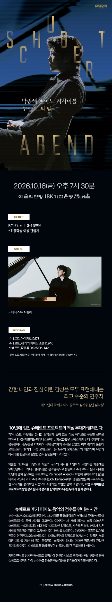

PIANOMODA · CONCERT PRELUDE
Concert
Prelude
Curated by PianoMoDa · with EJ Seo
Jonghai Park · Schubert Abend
2026. 10. 16 (Fri) · 7:30 PM예술의전당 IBK기업은행챔버홀
ABOUT THIS RECITAL
Schubert Abend
약 10년에 걸쳐 이어온 Schubert Project의 핵심 리사이틀 · 초기의 D.178에서 1827년 D.935, 마지막 해 1828년 D.946으로 이어지며 슈베르트 피아노 음악의 서로 다른 표정을 한 무대에서 연결
1815Early Schubert · D.178
1827Four Impromptus · D.935
1828Late Schubert · D.946

PIANIST
박종해 · Jonghai Park
Schubert Project · 장기적으로 이어온 슈베르트 탐구이번 리사이틀 · D.178 / D.946 / D.935
ARTIST PROFILE ↗I · EARLY SCHUBERT
Adagio in G major, D.178
FORM / STRUCTURE · Single-movement Adagio · Compact sonata-like trajectory · Chorale-like opening · Harmonic excursion · Enriched return
LISTEN FOR · Chordal voicing · Inner-voice suspensions · Chromatic harmonic turns · Arpeggiated return of the opening material
ABOUT
절제된 코랄풍 화음에서 시작해 서정적인 선율과 예상 밖의 화성 전환이 점차 깊어지는 초기 피아노 작품 · 첫 소재가 다른 음역과 질감으로 되돌아오며 짧은 형식 안에서 긴 호흡을 형성
CONTEXT
1815년 작곡 · 완결된 제1판과 단편으로 남은 제2판이 존재 · 이번 예습은 완결된 First Version을 기준으로 구성
REFERENCE PERFORMANCE · Alberto Miodini · D.178 First Version
SCORE PREVIEW
D.178 · First Version · 4 pagesTypeset from autograph · CC BY-NC-SA 4.0
II · FOUR IMPROMPTUS
4 Impromptus, Op. posth. 142, D.935
FORM / STRUCTURE · Sonata-related opening · Minuet & Trio · Theme + 5 Variations · Extended ternary / rondo-like finale
LISTEN FOR · Recurring motivic links · Major/minor reframing · Songful inner voices · Rosamunde-theme transformation · Hemiola and dance impulse
I · ALLEGRO MODERATO · F MINORSonata-related design · imposing opening gesture · lyrical A-flat major contrast · return without a conventional development section
II · ALLEGRETTO · A-FLAT MAJORMinuet–Trio–Minuet · restrained outer dance · flowing triplet motion and darker harmonic shading in the Trio
III · ANDANTE · B-FLAT MAJORTheme + five variations · theme shared with Schubert’s Rosamunde world · progressively transformed texture rather than simple ornamentation
IV · ALLEGRO SCHERZANDO · F MINORExtended ternary / rondo-like design · persistent hemiola · Hungarian-flavored rhythmic profile · increasingly virtuosic close
RECOMMENDED PERFORMANCE · András Schiff · Four Impromptus D.935
HISTORICAL SCORE · PREVIEW
Historical edition · public scorePreview uses the older score rather than the modern practice edition.
Personal practice reference · Henle edition retained separately · not published on the public site
III · LATE SCHUBERT
Drei Klavierstücke, D.946
FORM / STRUCTURE · Ternary / rondo-based designs · Recurrent returns separated by sharply contrasting episodes
LISTEN FOR · Sudden tonal distance · Persistent rhythmic cells · Long-span returns · Contrast between improvisatory surface and tightly controlled architecture
I · ALLEGRO ASSAI · E-FLAT MINORRevised ternary design · storm-driven outer sections · striking B-major Andante at the center · original rondo-like conception compressed by Schubert’s later cut
II · ALLEGRETTO · E-FLAT MAJORABACA rondo · calm recurring refrain · dark C-minor episode · more remote A-flat-minor episode with its own internal expansion
III · ALLEGRO · C MAJORScherzo-like ternary design · syncopated, dance-driven outer sections · broader D-flat-major middle section · compressed return and direct close
RECOMMENDED PERFORMANCE · András Schiff · Drei Klavierstücke D.946
SCORE PREVIEW
D.946 · Three Piano Pieces · 20 pagesClick/tap for the full score viewer
AFTER THE CONCERT
Encore & Postlude
♪
TO BE ADDED AFTER 16 OCT 2026Encore · performance notes · PianoMoDa Postlude
ORIGINAL PROGRAM
